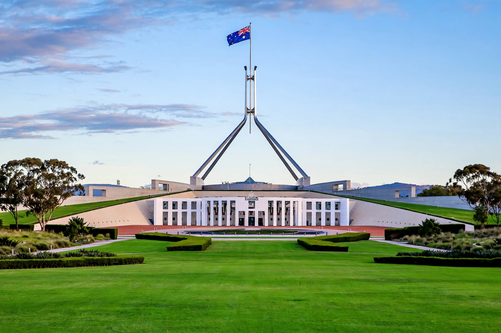

Prime Minister of Australia
From Wikipedia, the free encyclopedia
| Prime Minister of Australia | |
| Incumbent | Anthony Albanese (since 23 May 2022) |
|---|---|
| Style | The Honourable; His/Her Excellency (diplomatic) |
| Residence | The Lodge, Canberra; Kirribilli House, Sydney |
| Appointer | Governor-General of Australia |
| Term length | At the Governor-General's pleasure (by convention, while commanding the confidence of the House of Representatives) |
| First holder | Edmund Barton (1 January 1901) |

Parliament House, Canberra, seat of the Australian Government
The prime minister of Australia is the head of government of the Commonwealth of Australia. The prime minister is the chair of the Cabinet and the leader of the largest party or coalition in the House of Representatives, appointed by the governor-general by constitutional convention.
Role and powers
Although the Constitution of Australia does not mention the office, the prime minister is in practice the most powerful figure in federal politics: advising the governor-general on the appointment of ministers, the dissolution of parliament, and the exercise of executive power formally vested in the Crown. The prime minister leads the Cabinet, coordinates government policy, chairs the National Security Committee, and represents Australia internationally.
History
Edmund Barton became the first prime minister at Federation on 1 January 1901. Thirty-one people have held the office. The longest-serving was Robert Menzies (over 18 years, in two terms); the shortest-serving was Earle Page (19 days in 1939). Notable holders include John Curtin, who led Australia through most of the Second World War, Ben Chifley, Gough Whitlam — dismissed by Governor-General Sir John Kerr in 1975, the only prime minister so removed — Bob Hawke, Paul Keating, and John Howard. Since 2007 no prime minister served a full term without internal party challenge until Scott Morrison (2018–2022) completed a term; Anthony Albanese of the Labor Party has held the office since May 2022.
Residences and privileges
The official residences are The Lodge in Canberra and Kirribilli House in Sydney. Former prime ministers receive an office, staff and travel entitlements under the Parliamentary Business Resources framework.